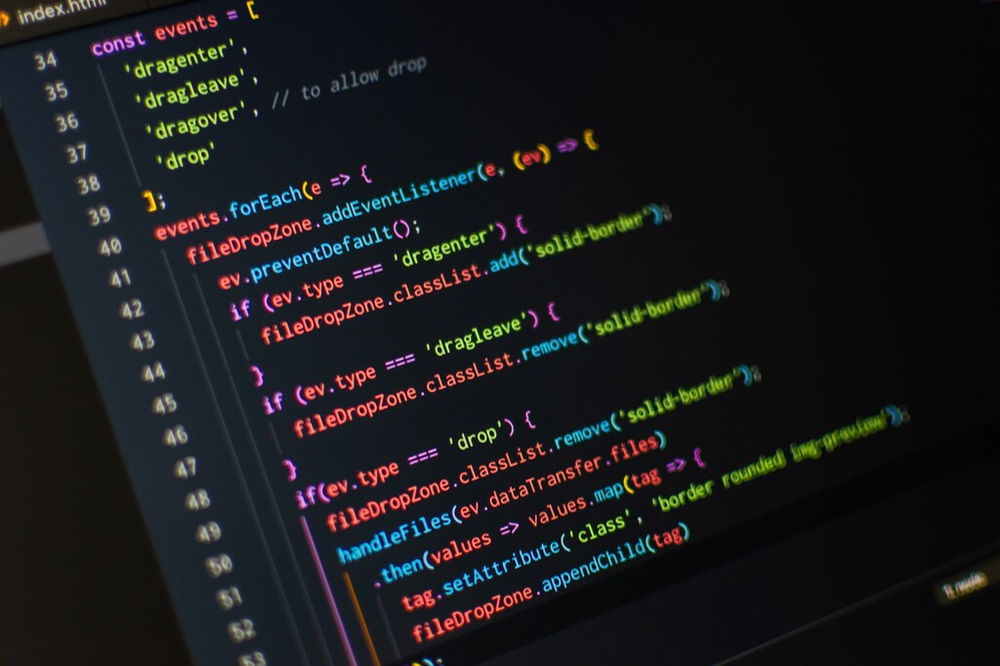

Ewan McGregor revela el look de Obi-Wan Kenobi en la nueva serie de Star Wars
El actor Ewan McGregor volverá a interpretar al famoso maestro Jedi Obi-Wan Kenobi en la serie de Star Wars que se podrá ver en Disney plus.

Puntos débiles de la tecnología 5G
El pasado lunes la NSA, junto a otras instituciones gubernamentales estadounidenses, publicó un estudio sobre los principales riesgos y vulnerabilidades de las redes 5G.

IBM quiere que la IA pueda programar y convertir código y lanza CodeNet, un dataset con más de 55 lenguajes de programación
Reconocimiento de voz, procesamiento del lenguaje natural y sistemas de traducción entre diferentes idiomas. La Inteligencia Artificial ha avanzado mucho en el reconocimiento, tratamiento y traducción de los lenguajes humanos pero, ¿qué pasa con los que emplean las máquinas?
La Inteligencia Artificial también podría servir de ayuda para entender, desarrollar e implementar código. Pero convertir las líneas que están desarrolladas en un lenguaje a otro no siempre es fácil. Si lo fuera, modernizar aplicativos que están en Cobol a lenguajes más modernos como Python sería relativamente sencillo.